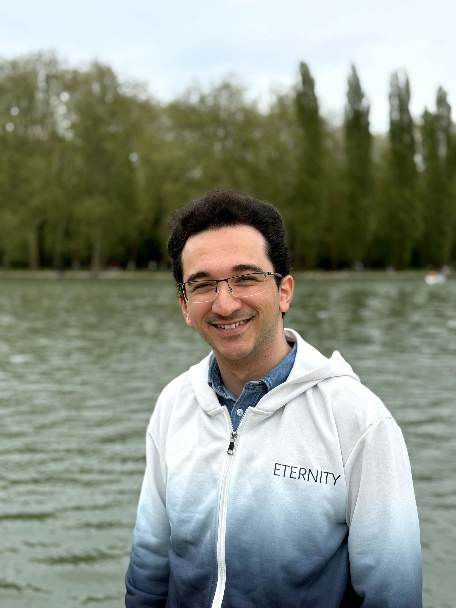

Efficient Zero-Shot Inpainting with Decoupled Diffusion Guidance
Zero-shot inpainting with a decoupled likelihood correction, closed-form Gaussian updates, and no denoiser backpropagation.
Paper & codePhD researcher · Paris, France
Sorbonne University École Polytechnique
I am a PhD student in Computer Science, supervised by Prof. Eric Moulines and Prof. Alain Durmus. My research focuses on generative modeling, particularly diffusion models, Bayesian inverse problems, and efficient sampling.
I explore how inference and reinforcement learning can guide generative models toward useful, controllable outcomes. Previously, I studied at Institut Polytechnique de Paris and Sharif University of Technology.

Zero-shot inpainting with a decoupled likelihood correction, closed-form Gaussian updates, and no denoiser backpropagation.
Paper & codeA preference-conditioned guidance policy that balances condition alignment and diversity while keeping the diffusion model frozen.
Read more